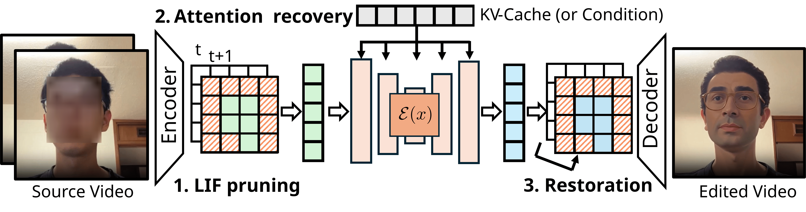
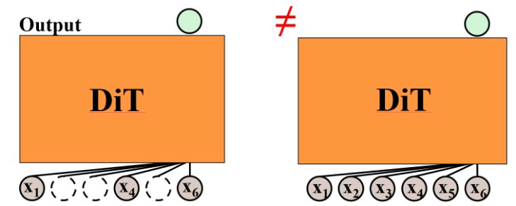
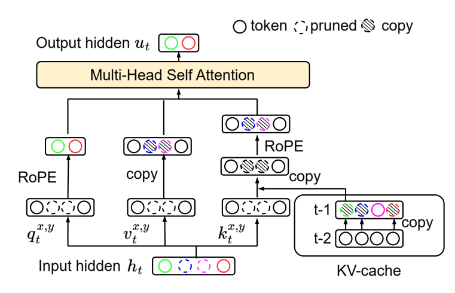
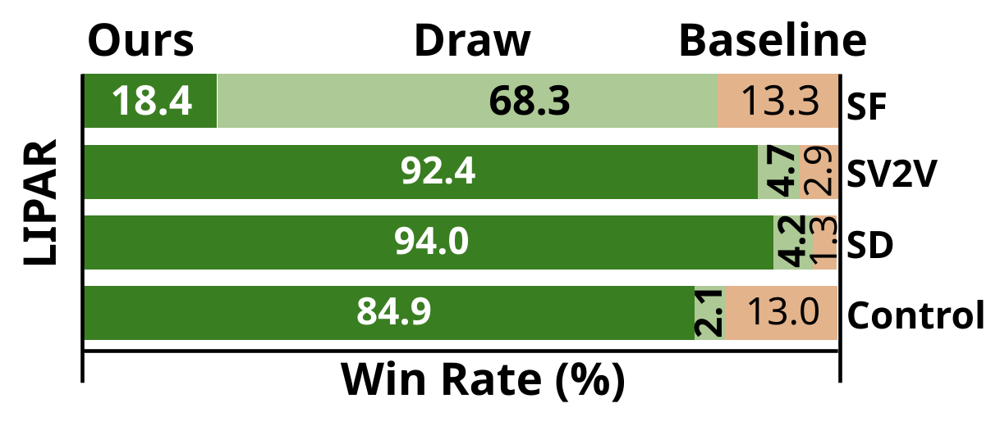
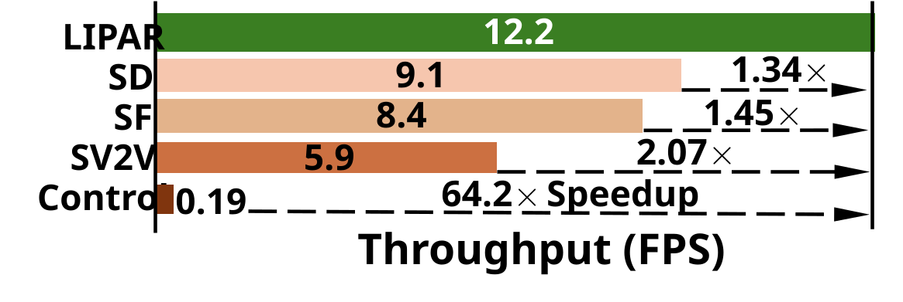
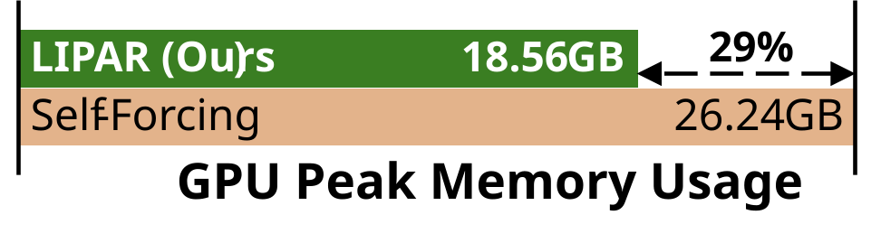

Current video generation models suffer from high computational latency, making real-time applications prohibitively costly. In this paper, we address this limitation by exploiting the temporal redundancy inherent in video latent patches. To this end, we propose the Latent Inter-frame Pruning with Attention Recovery (LIPAR) framework, which detects and skips recomputing duplicated latent patches. Additionally, we introduce a novel Attention Recovery that approximates the attention values of pruned tokens, thereby removing visual artifacts arising from naively applying the pruning method. Empirically, our method increases video editing throughput by 1.53×, on average achieving 19.3 FPS on an NVIDIA RTX 4090 compared to the baseline 12.6 FPS. The proposed method does not compromise generation quality and can seamlessly integrate with the model without additional training. Our approach effectively bridges the gap between traditional compression algorithms and modern generative pipelines.
Videos have high temporal and spatial redundancy. Traditional video processing methods save compute and memory by not re-processing similar patches. Can we use the same techniques in the modern video generation pipeline (latent diffusion model)?
In the following:1. We first verify that redundancy exists in the latent space.
2. We design the Latent Inter-frame with Attention Recovery (LIPAR) framework to fit within the latent diffusion model.
3. We propose Attention Recovery to mitigate the train-inference discrepancy incurred by pruning.
Goal: Calculate the Pearson correlation between the changes of pixels and latents with the same spatial location.
$$ \text{Corr}\left(\|p_{\text{pixel}}^{(t,x,y)} - p_{\text{pixel}}^{(t+1,x,y)}\|, \ \|p_{\text{latent}}^{(t,x,y)} - p_{\text{latent}}^{(t+1,x,y)}\|\right) $$
Results: WAN2.1 VAE: 0.69, WAN2.2 VAE: 0.77 (evaluated on Davis2017 train/val sets)
Meaning: A strong linear relationship implies if a patch does not change (is redundant) in pixel space, it also does not change in latent space.
Question: Is the decoder sensitive to compression error?
Experiment:
Results: Compressed 46%, LPIPS < 0.05
Meaning: The VAE is insensitive to the compression error.
Compress: 0%
Compress: 34%
These experiments show that latents (1) contain redundancy and (2) the decoder is insensitive to the compression error, which motivates us to adapt the video compression algorithm in pixel space to the latent space.
We propose LIPAR, a training-free method built on top of the Diffusion Transformer (Self-forcing), that accelerates video generation and reduces memory usage by exploiting the temporal redundancy in video latent patches across three stages:

Pruning latents will result in visual artifacts because when training the DiT, it only sees full-dimensional latents. Our goal is to approximate the original output values using the pruned input. In the following example, \(x_2\), \(x_3\), and \(x_5\) are pruned along the temporal axis.

Train-Inference Difference

Attention Recovery Overview
Instead of approximating all attention blocks in the DiT simultaneously, we first approximate a single attention block. Since the FFN and Cross-attention operate token-wise and are unaffected by pruning, we only need to approximate the output from the Self-attention layer.
We separate the approximation into two components: (1) signal values (M-degree approximation), and (2) noise distributions (Noise-aware duplication).
1. M-degree approximation: In the following equation, we list the original self-attention calculation on the left-hand side. For LIF pruning, pruning \(x_2\) and \(x_3\) implies that their signal components are similar (\(x_1 \approx x_2 \approx x_3\)). Therefore, on the right-hand side, we can approximate \(x_2\) and \(x_3\) using \(x_1\).
$$\frac{e^{q^T k_1} v_1 + e^{q^T e^{\theta j} k_2} v_2 + e^{q^T e^{2\theta j} k_3} v_3 + A}{e^{q^T k_1} + e^{q^T e^{\theta j} k_2} + e^{q^T e^{2\theta j} k_3} + B} \approx \frac{(e^{q^T k_1} + e^{q^T e^{\theta j} k_1} + e^{q^T e^{2\theta j} k_1}) v_1 + A}{e^{q^T k_1} + e^{q^T e^{\theta j} k_1} + e^{q^T e^{2\theta j} k_1} + B}$$
Where \(e^{\theta j}\) represents the RoPE positional encoding. The sum of \(m\)-largest terms is sufficient to approximate sums of exponentials in the parentheses.
2. Noise-aware duplication: The noise components of \(x_1\), \(x_2\), and \(x_3\) are i.i.d., hence we cannot assume (\(x_1 \approx x_2 \approx x_3\)). Instead, we must find a noise-free \(x_1\) (from KV cache or noise filtering) and decide whether to add fresh i.i.d. noise to match their distribution.
The acceleration mostly comes from generating fewer tokens, as \(x_2\) and \(x_3\) do not need to be regenerated throughout the entire DiT.
Use your cursor on the video to slide left/right for the video. The edited keyword and is marked as red. You may also want to check comparisons with other models, other pruning methods, ablation study, and extention to TTM.
Input videos, left: original video, right: pruned (highlight in gray) latents.
Edited results, left: Self-forcing, right: LIPAR.
We evaluate our method on 51 video-prompt pairs. For the full evaluation results, please see this link. The human evaluation test is performed by 14 participants, throughput and memory usage is evaluated on the entire dataset and on an A6000 GPU. Compared with the baseline (Self-forcing), LIPAR achieves 1.45× speedup, and 20% memory reduction while maintaining 86.7% win-tie rate.



For videos with camera motion, LIPAR achieves less acceleration due to the direct comparisons with previous patches.
@article{menn2026trainingfreelatentinterframepruning,
title={Training-free Latent Inter-Frame Pruning with Attention Recovery},
author={Dennis Menn and Yuedong Yang and Bokun Wang and Xiwen Wei and Mustafa Munir and Feng Liang and Radu Marculescu and Chenfeng Xu and Diana Marculescu},
journal={arXiv preprint arXiv:2603.05811},
year={2026}
}